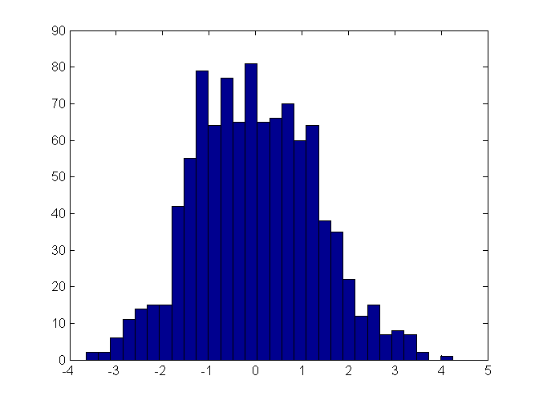

Contents
one
j’ai réussi à estimer un taux de transformation (nombre achats/nombre de visites)
avec une précision de 1% à l’aide de 15 000 visites.
De combien de visites ai-je besoin pour avoir une précision dix fois supérieure,
à savoir 0,1% (1 pour mille)
Réponse :
Let's say that each visit Xi follows an independent law which
yields success with probability p (the conversion rate to estimate)
In probability theory, the central limit theorem (CLT) states that, given certain conditions,
the arithmetic mean of a sufficiently large number of iterates of independent random variables,
each with a well-defined expected value and well-defined variance, will be approximately normally distributed.
That is, suppose that a sample is obtained containing a large number of observations,
each observation being randomly generated in a way that does not depend on the values of the other observations,
and that the arithmetic average of the observed values is computed.
If this procedure is performed many times, the central limit theorem says
that the computed values of the average will be distributed according to the normal distribution
On cherche à estimer le pourcentage de personnes ayant acheté / ayant visité.
Pour cela on effectue un sondage. Comme on ne sonde pas toute la population
on ne va pas tomber exactement sur la bonne valeur mais de faire une erreur.
On veut alors donner un intervalle qui a 99 % de chances de contenir la vraie valeur.
on sait qu'un sondage sur 15 000 personnes donne un intervale de
confiance de 1%
On appelle p la « vraie » proportion de personnes dans la population totale qui ont acheté.
On cherche à estimer p. On appelle N le nombre de personnes ayant été sondées, ici N=15 000.
On appelle S le nombre de personnes ayant acheté parmi les N personnes ayant visité.
L’idée est de présenter comme estimation de p la valeur $$ \frac{S}{N}$$ (loi
des grands nombres).
On applique le théorème central limite à la variable aléatoire X_i
qui vaut 1 si la i-ème personne visitante a acheté et 0 sinon.
Cette variable a une moyenne p et une variance p(1-p). Alors:
D'après le théorème central limite,tend vers une loi normale de moyenne 0 et de variance 1 (lorsque S = X_1 + ... + X_N et N est assez grand). ou encore
tend vers une loi normale de moyenne 0 et de variance 1 5% quantile for the canonic gaussian = 1,96
1% quantile for the canonic gaussian = 2.5758
soit encore
$ donne 1% de precision
0.1% quantile for the canonic gaussian = 2.5758
$$P\left(-3.2905<\frac{S/N-p}{\sqrt{p(1-p)/N}}<3.2905\right) \approx 0,999$$soit encore
N=15000 => 1% precision from all those computations we derive our sample size to get to 0.1%
constante* (nb std(1%))/sqrt(N) =1%
constante * 3.2905 /sqrt(N) =0.1%
x = norminv([0.025 0.975],0,1) x = norminv([0.005 0.995],0,1) x = norminv([0.0005 0.9995],0,1) constante= 0.01/(2.3263/sqrt(15000)); N=(constante* 3.2905/0.001)^2 % pour améliorer du pourcent au dizième de pourcent, il faut augmenter % l'échantillon de dizaine de milliers à des millions
x = -1.9600 1.9600 x = -2.5758 2.5758 x = -3.2905 3.2905 N = 3.0011e+06
two
Un tirage AB (probabilité d’être dans le groupe test est égale à 0.5) est réalisé pour un échantillon de taille 1 million. Le pourcentage observé d’individus dans la population test est de 48 Est-ce normal ? I would say no : in standard cross-validation : In k-fold cross-validation, the original sample is randomly partitioned into k equal size subsamples. (this is usually implemented by shuffling the data array and then splitting it in k). Of the k subsamples, a single subsample is retained as the validation data for testing the model, and the remaining k ? 1 subsamples are used as training data. The cross-validation process is then repeated k times (the folds), with each of the k subsamples used exactly once as the validation data. The k results from the folds can then be averaged (or otherwise combined) to produce a single estimation. The advantage of this method over repeated random sub-sampling is that all observations are used for both training and validation, and each observation is used for validation exactly once. 10-fold cross-validation is commonly used,[6] but in general k remains an unfixed parameter [1]. 2-fold cross-validation : This is the simplest variation of k-fold cross-validation. Also, called holdout method. For each fold, we randomly assign data points to two sets d0 and d1, so that both sets are equal size (this is usually implemented by shuffling the data array and then splitting it in two). We then train on d0 and test on d1, followed by training on d1 and testing on d0. This has the advantage that our training and test sets are both large, and each data point is used for both training and validation on each fold the hypergeometric distribution is a discrete probability distribution that describes the probability of k successes in n draws without replacement from a finite population of size N containing exactly K successes. This is in contrast to the binomial distribution, which describes the probability of k successes in n draws with replacement. the binomial distribution is the discrete probability distribution of the number of successes in a sequence of n independent yes/no experiments, each of which yields success with probability p but why not ? for each element of our sample, we use a binomial law to predict its group but why not
c = cvpartition(100,'kfold',2) cnew = repartition(c) c = cvpartition(100,'kfold',3) cnew = repartition(c) % but if we draw with replacement ( we approximate the hypergeometric % distribution with a binomial distribution ) pd = makedist('Binomial','N',100,'p',0.5) r = random(pd,[100,1]); mean(r) % the proportion are no more 50/50
c =
K-fold cross validation partition
N: 100
NumTestSets: 2
TrainSize: 50 50
TestSize: 50 50
cnew =
K-fold cross validation partition
N: 100
NumTestSets: 2
TrainSize: 50 50
TestSize: 50 50
c =
K-fold cross validation partition
N: 100
NumTestSets: 3
TrainSize: 67 66 67
TestSize: 33 34 33
cnew =
K-fold cross validation partition
N: 100
NumTestSets: 3
TrainSize: 67 66 67
TestSize: 33 34 33
pd =
BinomialDistribution
Binomial distribution
N = 100
p = 0.5
ans =
50.1000
three
j’ai testé le taux de transformation sur deux versions du site lors d’un test AB (test randomisé). J’obtiens les résultats suivants : Groupe Contrôle Groupe Test Taille Groupe 117415 117284 Taux de transformation observé 7,07% 9,36% Quel est l’intervalle de confiance du gain incrémental (Taux de transformation TEST – Taux de transformation CONTROLE) ? on suppose donc que chaque groupe suit une loi de paramètre p différent la premiere chose à faire est de tester les deux distributions non normales pour s'assurer qu'elles sont bien différentes Wilcoxon rank sum test ou % p = ranksum(x,y) The p-value indicates if ranksum rejects or not the null hypothesis of equal medians at the default 5% significance level. p<0.05 : on rejete l'hypothes nulle : pas meme mediane 2-sample Kolmogorov-Smirnov test h = kstest2(x1,x2) The returned value of h = 1 indicates that kstest rejects the null hypothesis at the default 5% significance level. Ensuite, avec les mêmes hypothèses que dans la question un, on peut déduire du théorème central limite : D'après le théorème central limite,
tend vers une loi normale de moyenne 0 et de variance 1 on en déduit deux intervalles de confiance En estimant
on peut alors encadrer p:
les deux intervalles de confiance se somment : en effet la somme de deux gaussiennes est une gaussienne
sont indépendantes, alors la variable aléatoire
on peut alors encadrer p2-p1:
numeriquement l'intervalle à 5% donne :
demi_intervalle=1.96*sqrt( 0.0707.*(1-0.0707)./117415 +0.0936.*(1-0.0936)./117284 )
demi_intervalle =
0.0022
four
Quels seraient, selon vous, les facteurs de saisonnalité du Chiffre d’Affaires de cDiscount ? les grandes phases de dépenses La période paroxystique de l'e-commerce est Noël Noël est un accélérateur pour le secteur, mais aussi un facteur déclencheur, puisque la période apporte un fort contingent de primoacheteurs. le deuxième période de ventes la plus importante reste liée aux soldes, puisqu'il s'agit des mois de juin et juillet. En plus des soldes, nos ventes augmentent sur plusieurs catégories de produits dotées d'une saisonnalité commerciale influence des saisonnalités propres des produits vendus (barbecue premier week end chaud). In recent years, Tesco has used MATLAB to automatically predict how promotions and British weather affect product food sales in its 2,400 UK stores. In this session, Duncan will present some of the most recent innovations from the supply chain development department. In particular, the team has improved promotional forecasting and price optimisation of the reduced to clear process. Furthermore, simulation and analysis of the supply chain has provided more accurate demand forecasts and led to improved supplier agreements. Tens of millions of pounds have been saved through these changes
five
Comment désaisonnaliseriez-vous cette série TRAMO-SEATS ou X12 arima pour la correction des variations saisonnières des indicateurs de court term ou sarima methodology
six
Mon taux de croissance de CA est de 15%. Comment pouvez-vous l’expliquer ? l'e-commerce suit la tendance générale de l'internet : grosse croissance les nouveaux terminaux, la sécurité garantie, les réseaux sociaux, tout concourt à l'e-commerce et au marketing web
seven
Toutes les semaines, il y a une probabilité de 10% d’avoir une baisse du CA. Quelle est la fréquence de l’évènement quatre semaines de baisse ? en supposant les variables iid :
proba=(0.1)^4
proba = 1.0000e-04
eight
j’achète sur une place de marché des visites. Le segment « hommes » achète avec une probabilité de 5%, le segment « femmes » avec une probabilité de 2%. Sachant que je paye l’acquisition de 100 visites hommes 50 euros, quel est le prix pour l’acquisition de 100 visites « femmes » ?
nine
calculez les coefficients de la régression linéaire de la variable y sur les variables x et la constante pour les individus dont la variable réponse vaut Y. Fichier regression.csv.Joindre le programme
[y,x,reponse] = importfile1('regression.csv'); % we build the predictor matrix A=[ones(size(x)),x]; beta=A\y; plot([y,A*beta]) residus=y-A*beta; % les residus n'ont pas forcément une structure de bruit blanc plot(residus); % l'histogramme des résidus hist(residus,30);
ten
le taux de transformation p2 est-il significativement supérieur au taux de transformation p1. Si oui, avec quelle fiabilité ? Fichier testmoyenne.csv. Joindre le programme
[p1,p2] = importfile('testmoyenne.csv'); %0.7750 rate1=sum(p1)./length(p1) %0.5110 rate2=sum(p2)./length(p2) % Hypothesis testing pour déterminer si les deux distributions sont % identiques % Wilcoxon rank sum test ou % p = ranksum(x,y) The p-value indicates if ranksum rejects or not the null hypothesis of equal medians at the default 5% significance level. p = ranksum(p1,p2) % p<0.05 : on rejete l'hypothes nulle : pas meme mediane % 2-sample Kolmogorov-Smirnov test % h = kstest2(x1,x2) The returned value of h = 1 indicates that kstest rejects the null hypothesis at the default 5% significance level. h = kstest2(p1,p2) % h=1 we reject the null hypothesis of the same distribution
rate1 =
0.7750
rate2 =
0.5110
p =
7.2498e-35
h =
1
eleven
sur la page http://stat-computing.org/dataexpo/2009/the-data.html, vous trouverez des données de transports aériens. Calculez les coefficients de la régression linéaire de la variable DepDelay sur les variables DayOfWeek, et heure de la semaine. Joindre le programme.
type big_regression; load restricted_data; DepTime=DepTime./1000; A=double([ones(size(DayOfWeek)),DayOfWeek,DepTime]); y=double(DepDelay); clear DepDelay DayOfWeek DepTime; size(A) beta=A\y %attention tres mauvais pouvoir predictif % en tout cas on s'aperçoit clairement que le facteur prepoonderant est le % departure time : % plus on part tard dans la journee, plus on a de chance d % etre en retard % penser a des choses non linéaires : neural net, regression tree % penser regularisation ridge, lasso, elastic net
tic;
f = fopen('2008.csv');
% C = textscan(f, '%d %d %d %d %d %d %d %d %s %d %s %d %d %d %d %d %*[^\n]', 100, 'Delimiter', ',', ...
% 'HeaderLines', 1, 'TreatAsEmpty', 'NA');
C = textscan(f, '%d %d %d %d %d %d %d %d %s %d %s %d %d %d %d %d %*[^\n]', 'Delimiter', ',', ...
'HeaderLines', 1, 'TreatAsEmpty', 'NA');
%*[^\n]'
[~, ~, ~, DayOfWeek, DepTime, ~,~,~,~,~,~,~,~,~,~,DepDelay] = C{:};
fclose(f);
toc;
clear C;
save('restricted_data.mat');
ans =
7009728 3
beta =
-5.4261
0.2681
10.3185
twelve
dans le graphe du site cdiscount.com, calculez le degré moyen sortant et entrant des pages (moyenne du nombre liens entrant la page, respectivement sortant). Donnez les 10 premiers couples de pages dans la distance est maximum, et donnez cette distance. Joindre le programme.
% plutot que recoder la roue : prendre en main l'api python panda ( still % to do) % http://www.dataiku.com/blog/2012/12/07/visualizing-your-linkedin-graph-using-gephi-part-1.html % http://www.dataiku.com/blog/2012/12/07/visualizing-your-linkedin-graph-using-gephi-part-2.html
thirteen
une méthode classique de recommandation est la technique dite de filtrage collaboratif. Il consiste à proposer à un client i les produits achetés par les clients ayant achetés.
%Les produits recommandés sont classés par fréquence d’apparition. % Proposez un algorithme et donner sa complexité ? Votre algorithme est-il parallélisable ? Si non, comment faire ? % mon_nouveau_client % mon_nouvel_achat_par_mon_nouveau_client % pour chaque client(i) % si mon_nouvel_achat_par_mon_nouveau_client est dans les produits achetés par le client(i) % alors comptabiliser les produits achetés par le client (les mettre % dans une hashmap par key, la value étant étant incrémenté de 1 à % chaque fois) % end %end % oui l'algorithme est parallélisable : à condition d'avoir une hashmap % threadsafe : partagé par plusieurs threads qui parcourent chacun un paquet de client % il faut juste que cette hash map gère les accès concurrentiels (facile en % java) % sinon c'est possible également, il faut merger les données à la fin.
fourteen
quelles pistes d’amélioration proposeriez-vous pour améliorer la personnalisation/recommandation sur cdiscount.com ?
% publicité ciblée au maximum (bonne personne, bon moment, bon produit) % profil construit à partir des pages visitées (clustering pour définir % type d'utilisateur % prise en compte de facteurs extérieurs : temps météo, tendance, % effet de réseaux sociaux : j'achète la même chose que dans mon réseau % analyse de cookies en général pas seulement cdiscount (si il prend beaucoup l'avion, il peut vouloir acheter un coussin repose tête) %